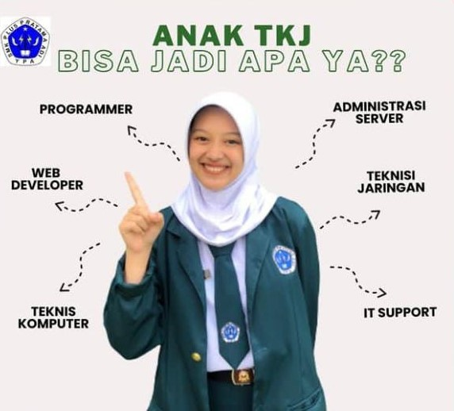
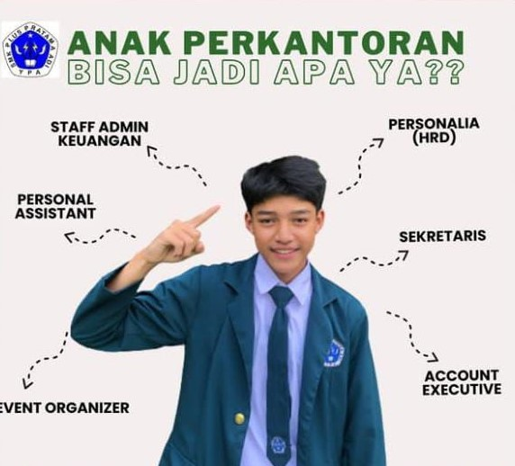

Our Top Majors
Jurusan
Ada 3 jurusan terbaik di SMK Plus Pratama Adi
apa saja ya?
Teknik Komputer dan Jaringan (TKJ)
TKJ Adalah singkatan dari Teknik Komputer Jaringan. TKJ merupakan sebuah kejuruan yang mempelajari tentang cara merakit komputer, mengenal dan mempelajari komponen hardware apa saja yang ada di dalam komputer, merakit komputer serta fokus mempelajari jaringan dasar. Tidak hanya itu selama tiga tahun belajar di TKJ anda akan belajar sistem kerja jaringan dan pemograman web serta meng-administrasi komputer jaringan. Jurusan Teknik Komputer Dan Jaringan bisa jadi Programmer,Administrasi Server,Teknisi Jaringan,Web Developer,Teknis Komputer, Atau IT Support.
Akuntansi

Jurusan Akuntansi adalah sebuah studi yang mempelajari teknik dalam mengukur dan mengelola sebuah transaksi dengan melakukan pengidentifikasian, pencatatan, penggolongan dan peringkasan yang disajikan pada laporan keuangan. Dan di Jurusan Akuntansi juga bisa menjadi Staff Akuntan,Customer Service Bank,Financial Analyst,Teller Bank,Konsultan Pajak, Atau bisa juga Budgeting Staff.
Manejemen Perkantoran dan Layanan Bisnis (MPLB)
Jurusan administrasi perkantoran adalah program studi di perguruan tinggi yang mempelajari mengenai operasional perusahaan baik secara administrasi dan kebutuhan kantor serta mengelola dan pengawasan tempat kerja. Di Jurusan Perkantoran juga kalian bisa menjadi Personalia atau yang bisa disebut sebagai HRD,dan ada juga Staff Admin Keuangan,Personal Assistant,Sekertaris,Account Executive,dan Event Organizer.